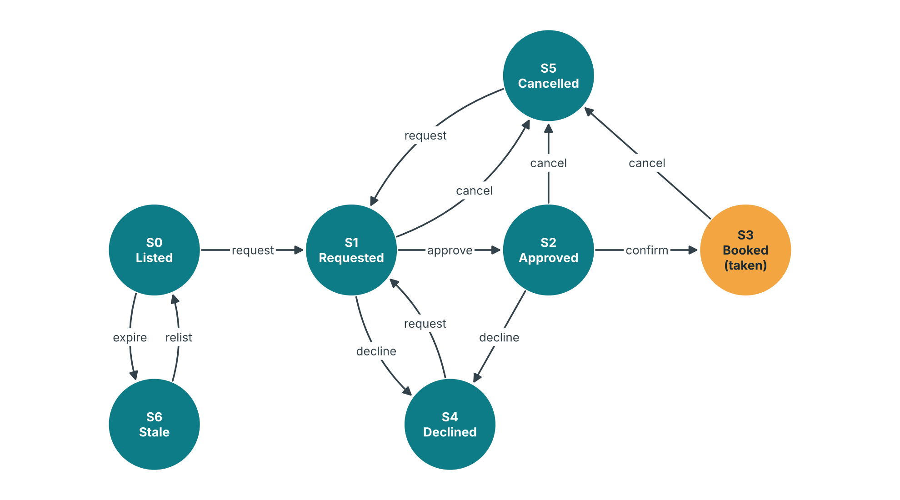

1System under test
Perch: a Next.js + Supabase web app that helps interns relocating for a summer find sublets, friends and events in a new city.
| Function | Screen / route | Component tested | Technique |
|---|---|---|---|
| Onboarding from an offer letter (parse, review, account, Spotify, Takeout, photo, flock) | /onboarding | lib/parsers/offerLetter.ts, onboarding steps | FSM (browser), PT (salary parsing) |
| Swipe deck of sublets, listing detail, request / approve / confirm / cancel a booking | /stories, /post | lib/bookings.ts, booking + listing API routes, lib/data/source.ts | FSM, CFT, UBST |
| Housing verdicts (budget, safety, lease fit, commute) and the finance readout | /negotiate, /landing | lib/negotiate/*, lib/finance/model.ts, /api/negotiate | PT, UBST |
| Listing freshness (expire stale listings, ping subletters) | daily cron | lib/sourcing/freshness.ts, /api/cron/expire-listings | CFT |
| Feed, map, messages, profile (navigation for usage-based testing) | /feed, /map, /dms, /profile | whole app | UBST |
Live: npm run demo:app then open http://localhost:3100 (fixture data, no keys, no login).
2Raw data for model construction, and how it was collected
| Data | Source | How collected | File |
|---|---|---|---|
| FSM booking model | Contract section 13.4 (booking state machine), README freshness rules, the one-live-hold DB index | Read from the spec, not the code, so the model is an independent oracle | tests/course/models/bookingFsm.ts |
| FSM onboarding model | The onboarding screens and the review-screen guard, observed in the running app | Walked through in a browser; guard conditions read from the screen | tests/e2e/onboarding-fsm.e2e.mjs |
| PT partitions | Documented 2025 single-filer tax constants, scout thresholds (10% budget flag, 7-day lease gap, 10/20-minute walk) | Expected values computed by hand, not read back from the code | docs/testing/pt/partitions.md |
| CFT control flow graphs | Source code of the target modules | Decision points traced by hand into six graphs | docs/testing/cft/cfg.md |
| Markov usage profile | Designed user journey and team estimates (Perch has no production users) | Projected profile; the opt-in /pilot logger collects real navigation data to refine it | tests/course/models/usageProfile.ts |
| Baseline coverage | The existing 499-case Vitest suite on the original code | Measured with @vitest/coverage-v8 before any course test was written | docs/testing/results/round1/coverage-by-technique.json |
| Test execution results | Every course-suite run, each round | Vitest JSON reporter, saved per round | docs/testing/results |
| UBST session runs | 60 generated sessions per round replayed in Chromium | Executor records each session's path, outcome and failure cause | docs/testing/ubst |
| Defect log | Every failure traced to a fault, classified with ODC type and trigger | Triage of each round's failures; fixes and retests recorded | docs/testing/defect-log.csv |
3Analysis of the raw data
Baseline: what the existing suite left untested
| Module under test | Baseline branch % | With course suites |
|---|---|---|
app/api/cron/expire-listings/route.ts | 0% | 87.5% |
app/api/negotiate/route.ts | 72.22% | 75% |
lib/bookings.ts | 75.36% | 85.58% |
lib/data/source.ts | 68.55% | 74.31% |
lib/finance/model.ts | 83.87% | 87.87% |
lib/negotiate/budget.ts | 100% | 100% |
lib/negotiate/lease.ts | 81.25% | 100% |
lib/negotiate/routine.ts | 84.61% | 92.85% |
lib/negotiate/safety.ts | 62.5% | 88.88% |
lib/negotiate/scouts.ts | 83.33% | 83.33% |
lib/parsers/offerLetter.ts | 86.13% | 88.34% |
lib/sourcing/freshness.ts | 90.9% | 94.73% |
| All target modules | 77.29% | 82.8% |
Modules at 0% or low coverage (expiry cron, booking transitions, the fallback in the data source) are where the white-box and FSM work was aimed.
Usage profile: where users spend their time
Analytic expected visits per session from the fundamental matrix N = (I - Q)-1; about 5.3 screens per session. Feed and the Perches deck dominate, so usage-based testing spends most sessions there.
| Screen | Expected visits per session |
|---|---|
| ONBOARDING | 0.60 |
| FEED | 1.50 |
| PERCHES | 1.24 |
| LISTING | 0.61 |
| BOOKING | 0.18 |
| NEGOTIATE | 0.12 |
| MAP | 0.26 |
| CHIRPS | 0.53 |
| NEST | 0.26 |
4Testing models
FSM/BBT: booking lifecycle (7 states, 13 valid transitions, 18 invalid pairs, 5 paths)
Owner: Jayden. Source of truth for the tests: tests/course/models/bookingFsm.ts.
Source of the model
Built from the specification, not the code: contract section 13.4 (deterministic booking state machine: requested -> approved -> booked, decline and cancel releases), the README freshness rule ("stale or taken listings never surface") and the one-live-hold rule. A state is the pair (latest booking status, listing status).
Mapping from the proposal's wording to the implemented vocabulary: "pending" = requested, "confirmed" = booked, "listing taken" = listing status taken, "relisted or expired" = listing available after a subletter confirm, or stale after the daily freshness pass.
States
| Id | Booking | Listing | Meaning |
|---|---|---|---|
| S0 | none | available | Listed, no live booking |
| S1 | requested | available | Intern requested, waiting on owner |
| S2 | approved | available | Owner approved, waiting on booker |
| S3 | booked | taken | Booker confirmed; listing leaves the deck |
| S4 | declined | available | Owner declined; listing free again |
| S5 | cancelled | available | Booker cancelled; listing free again |
| S6 | none | stale | Expired without reconfirmation |
Diagram

Test design
Three coverage criteria, run against two implementations of the same behavior: the live API path (real route handlers over an in-memory Supabase fake) and the fixture data source the app uses with no keys.
- Transition coverage: every valid transition T01-T13 at least once.
- Sneak paths: 18 invalid (state, event or actor) pairs I01-I18; each must be rejected (403 wrong actor, 409 wrong state) and leave state unchanged.
- Path coverage: 5 multi-event paths P01-P05 from S0, with the invariant "at most one live hold per listing" checked at the end.
- Concurrency: C01 two interns request at the same instant; C02 owner double-approves.
| Id | From | Event | Expected | Live API (round 1) | Fixture (round 1) |
|---|---|---|---|---|---|
| T01-T05, T09 | see diagram | to-state | pass | pass | |
| T06-T08 | S1/S2/S3 | cancel | S5 | pass (library only, no route: D07) | N/A (no fixture method: D07) |
| T10-T11, T13 | pass | N/A (no fixture expiry) | |||
| T12 | S6 | relist | S0, 7-day window | pass | fail: 14-day window (D06) |
| I01, I14-I16 | wrong actor | 403 | pass | N/A (single actor) | |
| I02, I03, I06, I08, I17, I18 | wrong state | 409, no change | pass | pass | |
| I04, I05, I07 | S3/S3/S4 | approve/decline/approve | no change | pass | fail (D03) |
| I09, I10, I11 | S1/S2/S3 | second request | 409 | pass | fail I09, I11 (D04) |
| I12 | S6 | request | 409 | pass | fail (D04) |
| I13 | S3 | relist | 409 | fail (D01) | fail (D05) |
| P01-P05 | S0 | paths | end state, one live hold | pass | partly N/A |
| C01 | S0 | two requests at once | 201 + 409 | fail: 201 + 500 (D02) | N/A |
| C02 | S1 | double approve at once | 200 + 409 | pass | N/A |
Totals: live path 40 cases (38 pass, 2 fail in round 1); fixture 19 cases (11 pass, 8 fail). All pass in round 2.
FSM/BBT: onboarding
Owner: Jayden. Executed end to end in Chromium with Playwright against the app in fixture mode: tests/e2e/onboarding-fsm.e2e.mjs.
Model
stateDiagram-v2 [*] --> O1 O1 --> O2: use sample / upload PDF O2 --> O2: edit field (finance recomputes) O2 --> O3: continue [employer, role, start set; no unreviewed flags; end >= start] O3 --> O4: continue (account created, or visible demo fallback) O4 --> O5: connect Spotify / skip O5 --> O6: use sample Takeout + continue / skip O6 --> O7: continue / skip (initials) O7 --> O8: continue / "find my flock later" (optionally add friends first) O8 --> [*]
| Id | State | Screen marker |
|---|---|---|
| O1 | Upload offer | "Upload your offer letter" |
| O2 | Review parsed fields | "Here's what we got" |
| O3 | Account assist | "Account created" or "No live account was created" |
| O4 | Spotify | "Connect Spotify" / "Skip for now" |
| O5 | Maps Takeout | "Maps Takeout" / "We found your usual spots" |
| O6 | Photo | "Put a face to your name" |
| O7 | Flock | "Find your flock" |
| O8 | Done | "You're set" |
The guard on O2 -> O3 is the interesting part: Continue must be enabled only when the required fields are present, every low-confidence field has been reviewed, and the dates are consistent.
Test cases and results
| Id | Covers | Round 1 | Round 2 |
|---|---|---|---|
| OB-T01 | O1 -> O2 | pass | pass |
| OB-T02 | O2 guard false: flags outstanding | pass | pass |
| OB-T03 | O2 guard true after reviewing flags | pass | pass |
| OB-T04 | O2 -> O3, visible fallback (no silent identity swap) | pass | pass |
| OB-T05..T09 | skip path O3 -> O4 -> O5 -> O6 -> O7 -> O8 | pass | pass |
| OB-T10 | continue path, add a friend in O7, reach O8 | pass | pass |
| OB-T11 | guard: empty employer disables Continue | pass | pass |
| OB-T12 | guard: end date before start date | fail (D08) | pass |
| OB-T13 | O2 self-loop: salary edit recomputes take-home | pass | pass |
| OB-T14 | reload in O5 | observation: returns to O1 | same |
OB-T14 is recorded as an observation, not a defect: the specification does not say whether onboarding progress survives a reload. It is listed as an open question for the final report.
PT/BBT: partition tables
Owner: Koen. Tests: tests/course/pt-verdict-rules.test.ts, tests/course/pt-finance.test.ts. Each input dimension is split into valid (V) and invalid (X) equivalence classes; boundaries get a case on each side. Expected outputs come from the specification (contract 13.5 and the scout thresholds) and were computed by hand, not read back from the code.
Budget scout: rent vs affordable rent (affordable = 2,000, flag tolerance 10%)
| Class | Range | Expected | Cases |
|---|---|---|---|
| V1 under budget | 0 <= price <= 2,000 | pass | PB-01, PB-02 (edge), PB-07 (0) |
| V2 slightly over | 2,000 < price <= 2,200 | flag | PB-03 (edge), PB-04 (edge) |
| V3 over | price > 2,200 | fail | PB-05 (edge), PB-06 |
Salary feeding the affordable rent
| Class | Expected | Cases |
|---|---|---|
| X absent / zero / negative | stated budget used | PB-08, PB-09, PB-10 |
| V salary ceiling above stated budget | stated budget (min) | PB-11, PN-01 (route), PN-02 (route) |
| V salary ceiling below stated budget | salary ceiling (615 at 30k) | PB-12 |
Salary band -> annual take-home (federal brackets + FICA + 5% state)
| Class | Salary | Expected take-home | Case |
|---|---|---|---|
| X negative | -1 | 0 | PF-01 |
| X zero | 0 | 0 | PF-02 |
| V below standard deduction | 10,000 | 8,735 | PF-03 |
| V edge: at deduction | 14,600 | 12,753 | PF-04 |
| V edge: one dollar taxable | 14,601 | 12,754 | PF-05 |
| V 12% band | 30,000 | 24,589 | PF-06 |
| V 24% band | 145,000 | 102,319 | PF-07 |
| V above SS wage base | 200,000 | 139,108 | PF-08 |
Cost-of-living index -> rent ceiling (monthly take-home 5,000)
| Class | Index | Expected | Case |
|---|---|---|---|
| V low | 80 | 1,200 | PF-09 |
| V average | 100 | 1,500 | PF-10 |
| V high, under 40% cap | 133 | 1,995 | PF-11 |
| V very high, capped | 152 | 2,000 | PF-12 |
| X zero / negative / NaN | 0, -10, NaN | 1,500 (national) | PF-13, PF-14, PF-15 |
Plus PF-16 to PF-19 for zero take-home, upfront cash and negative stipend/bonus.
Pay period as written in the offer letter (salary is "annual USD")
| Class | Example text | Expected | Case | Round 1 |
|---|---|---|---|---|
| V annual, labelled | "Base salary: $145,000" | 145,000 | PF-20 | pass |
| V annual, "per year" | "$120,000 per year" | 120,000 | PF-21 | pass |
| X missing | (none) | null, flagged | PF-22 | pass |
| V hourly | "$45.00 per hour", "$52/hr" | x 2,080, flagged | PF-23, PF-24 | fail: 45, 52 (D09) |
| V monthly | "$8,000 per month" | x 12, flagged | PF-25 | fail: 8,000 (D09) |
| V weekly | "$1,800 per week" | x 52, flagged | PF-26 | fail: 1,800 (D09) |
| V cents | "$95,000.50" | 95,000 | PF-27 | pass |
Lease window vs stay (stay 2026-06-08 .. 2026-08-14; flag if total gap <= 7 days)
| Class | Expected | Cases | Round 1 |
|---|---|---|---|
| V covers fully (incl. exact edges) | pass | PL-01, PL-02 | pass |
| V starts late 1..7 / 8+ days | flag / fail | PL-03, PL-04, PL-05 | pass |
| V ends early 7 / 8 days | flag / fail | PL-06, PL-07 | pass |
| V both ends, total 7 / 8 | flag / fail | PL-08, PL-09 | pass |
| V disjoint | fail | PL-10 | pass |
| X lease date missing | fail, "Lease dates unknown" | PL-11, PL-12 | pass |
| X malformed lease or stay date | fail, no "NaN" in text | PL-13, PL-14 | fail (D12) |
| X inverted stay | not pass | PL-15 | fail (D12) |
| Route: malformed / inverted stay | 400 | PN-03, PN-04 | fail (D11) |
| Route: one-day stay (edge) | 200, pass | PN-06 | pass |
| Route: zero budget | 400 | PN-05 | pass |
Commute (walking minutes to nearest anchor; pass <= 10, flag <= 20)
0, 10, 11, 20, 21, 60 minutes (PR-01..PR-06) plus no anchors and missing listing coordinates (PR-07, PR-08). All pass.
Safety flags and roll-up
Clean / note only / scam / scam + note / null / partial object (PS-01..PS-06) and the fail > flag > pass roll-up (PA-01..PA-04). All pass.
Totals
78 PT cases. Round 1: 68 pass, 10 fail (4 defects: D09, D10, D11, D12). Round 2: 78 pass.
CFT/WBT: control flow graphs
Owner: Koen. Tests: tests/course/cft-branches.test.ts, tests/course/cft-source-fallback.test.ts. Criterion: branch (decision) coverage of each graph, measured with @vitest/coverage-v8. Nodes are numbered decisions; each test case names the edge it forces.
CFG-1 planFreshness (lib/sourcing/freshness.ts)
for each row: D1 status == available? no -> next row CF-01 D2 expires_at present? no -> next row CF-02 D3 expires_at parses? no -> next row CF-03 D4 now > expires? yes -> expire, next row CF-04, CF-05 (now == expires) D5 !sourced and within 2d? yes -> ping CF-06; no: CF-07 (sourced), CF-08 (outside)
CFG-2 runFreshnessPass
read error -> throw (CF-09); nothing to expire -> no update (CF-10); update error -> throw (CF-11); expire available rows only (CF-12).
CFG-3 cron/expire-listings route
rate limited -> 429 (CF-16); not authorized -> 403 (CF-13); pass ok -> 200 (CF-14); pass throws -> 500 (CF-15). Baseline coverage of this route was 0%.
CFG-4 transitionBooking
switch(action) with an actor guard and a status guard per arm. The baseline covered the main arms; CF-17 (default arm), CF-18 (decline by non-owner), CF-19 (cancel by non-owner), CF-20 (cancel from a terminal status) close the remaining edges.
CFG-5 performTransition (lib/bookings.ts)
N1 fetch booking -> not found: throw 404 CF-21
N2 resolve role: owner | booker | roommate | invitee | other CF-22 (roommate), CF-23 (invitee)
N3 transitionBooking (CFG-4)
N4 update where status = old -> error: throw CF-24
-> no row: 409 concurrent (C02 in FSM suite)
N5 setListingTaken? -> write error: throw CF-25
N6 releaseListing and old == booked? no: no listing write CF-26
yes: listing available CF-27
CFG-6 booking mutations in lib/data/source.ts (fixture | live fallback)
N1 live mode with keys? no -> N5 fixture mutation CF-30
N2 fetch throws -> N5 CF-32
N3 response ok? 5xx -> N5 CF-33
4xx -> N5 (round 1) CF-35, CF-36, CF-37, CF-38
N4 usable body? no -> N5 CF-34
yes -> return live value CF-31
The 4xx edge is the finding: a deliberate refusal from the server (409 listing already held, 403 own listing, 409 illegal transition) took the same edge as an outage, so the client fabricated a local "requested" booking or flipped a fixture row. The fix (D13) adds a separate 4xx edge that throws LiveRejectedError; outages, 401 and 429 keep the documented degrade-to-fixture edge (CF-32, CF-33, CF-34, CF-39).
Coverage effect (branch %, target modules)
| Module | Baseline | Baseline + course suites |
|---|---|---|
| cron/expire-listings route | 0% | 87.5% |
| lib/bookings.ts | 76.1% | 85.6% |
| lib/data/source.ts | 66.7% | 74.0% |
| lib/negotiate/lease.ts | 81.3% | 100% |
| lib/negotiate/safety.ts | 62.5% | 88.9% |
| lib/sourcing/freshness.ts | 90.9% | 94.7% |
| Target set total | 76.7% | 83.3% |
Round 1: 37 CFT cases, 33 pass, 4 fail (all D13). Round 2: 37 pass.
Markov-OP/UBST: transition matrix (projected-v1)
| From \ To | ONBOARDING | FEED | PERCHES | LISTING | BOOKING | NEGOTIATE | MAP | CHIRPS | NEST | EXIT |
|---|---|---|---|---|---|---|---|---|---|---|
| START | 0.60 | 0.40 | ||||||||
| ONBOARDING | 0.85 | 0.15 | ||||||||
| FEED | 0.10 | 0.35 | 0.15 | 0.15 | 0.10 | 0.15 | ||||
| PERCHES | 0.10 | 0.20 | 0.45 | 0.10 | 0.15 | |||||
| LISTING | 0.45 | 0.30 | 0.10 | 0.15 | ||||||
| BOOKING | 0.30 | 0.25 | 0.15 | 0.30 | ||||||
| NEGOTIATE | 0.30 | 0.40 | 0.30 | |||||||
| MAP | 0.35 | 0.20 | 0.15 | 0.30 | ||||||
| CHIRPS | 0.25 | 0.30 | 0.15 | 0.30 | ||||||
| NEST | 0.35 | 0.20 | 0.15 | 0.30 |
Owner: Jayden. Model: tests/course/models/usageProfile.ts (version projected-v1). Checks: tests/course/markov-profile.test.ts. Generator: scripts/testing/markov-walk.ts.
Why projected
Perch is an MVP with no production users, so there is no field data. The initial profile encodes the designed user journey (onboarding first, then the Flyway feed, Perches and booking as the core) as team estimates. It will be refined with navigation counts from the pilot (10-15 student volunteers), and the reliability figures will be reported as conditional on the profile, with a sensitivity check.
States and transition matrix (rows sum to 1; EXIT absorbing)
| From \ To | ONB | FEED | PERCH | LIST | BOOK | NEG | MAP | CHIRP | NEST | EXIT |
|---|---|---|---|---|---|---|---|---|---|---|
| START | .60 | .40 | ||||||||
| ONBOARDING | .85 | .15 | ||||||||
| FEED | .10 | .35 | .15 | .15 | .10 | .15 | ||||
| PERCHES | .10 | .20 | .45 | .10 | .15 | |||||
| LISTING | .45 | .30 | .10 | .15 | ||||||
| BOOKING | .30 | .25 | .15 | .30 | ||||||
| NEGOTIATE | .30 | .40 | .30 | |||||||
| MAP | .35 | .20 | .15 | .30 | ||||||
| CHIRPS | .25 | .30 | .15 | .30 | ||||||
| NEST | .35 | .20 | .15 | .30 |
Routes: ONBOARDING /onboarding, FEED /feed, PERCHES /stories, LISTING and BOOKING are the detail sheet and request/confirm bar on /stories, NEGOTIATE /negotiate, MAP /map, CHIRPS /dms, NEST /profile/[id].
Model validation (all pass)
- MK-01 every row is a probability distribution.
- MK-02 EXIT is reachable from every state (absorbing chain).
- MK-03 every screen is reachable from START.
- MK-04 the walk generator is reproducible for a fixed seed.
- MK-05 simulated visit frequencies (20,000 walks) match the analytic expected visits from the fundamental matrix N = (I - Q)^-1.
Profile statistics (analytic) and the first generated suite (200 walks, seed 2026)
| Screen | Expected visits / session | Drawn suite |
|---|---|---|
| ONBOARDING | 0.600 | 0.585 |
| FEED | 1.499 | 1.460 |
| PERCHES | 1.244 | 1.220 |
| LISTING | 0.610 | 0.585 |
| BOOKING | 0.183 | 0.190 |
| NEGOTIATE | 0.124 | 0.090 |
| MAP | 0.264 | 0.260 |
| CHIRPS | 0.529 | 0.455 |
| NEST | 0.257 | 0.210 |
Expected screens per session: 5.31 (drawn: 5.06). The suite has 115 distinct paths; the most probable are START > ONBOARDING > EXIT (0.090), START > ONBOARDING > FEED > EXIT (0.077) and START > FEED > EXIT (0.060).
Next (second half)
- Add opt-in navigation logging and run the pilot; re-estimate each row from counts (maximum likelihood: n(i,j) / n(i)) as
pilot-v1. - Build the executor that replays each walk in Playwright against the live Supabase environment, recording a failure on any 5xx, uncaught page error or broken invariant.
- Estimate reliability R = 1 - failures / runs per round, fit a simple reliability growth model across rounds, and vary key probabilities (booking and abandonment rows) +/- 50% as the sensitivity check.
5Test cases and the organized suite
Every case, grouped by technique, suite and model element. Ids map to the models: T/I/P/C = FSM transitions, invalid pairs, paths, concurrency; PB/PL/PR/PS/PF/PN = PT classes; CF = CFG edges; R = regressions. "Round 1" is the result on the original, unfixed code.
FSM/BBT · fsm-booking-live.test.ts · 40 cases · 2 failed in round 1
Booking state machine, live API routes over an in-memory database
| Test case | Round 1 (original code) | Now |
|---|---|---|
| FSM booking model - live API path - valid transitions (transition coverage) | ||
| T01: S0 --request--> S1 | pass | pass |
| T02: S1 --approve--> S2 | pass | pass |
| T03: S1 --decline--> S4 | pass | pass |
| T04: S2 --decline--> S4 | pass | pass |
| T05: S2 --confirm--> S3 | pass | pass |
| T06: S1 --cancel--> S5 | pass | pass |
| T07: S2 --cancel--> S5 | pass | pass |
| T08: S3 --cancel--> S5 | pass | pass |
| T09: S4 --request--> S1 | pass | pass |
| T10: S5 --request--> S1 | pass | pass |
| T11: S0 --expire--> S6 | pass | pass |
| T12: S6 --relist--> S0 | pass | pass |
| T13: S0 --relist--> S0 | pass | pass |
| T05 side effect: confirming flips the listing to taken | pass | pass |
| T08 side effect: cancelling a booked stay releases the listing with a future expiry | pass | pass |
| FSM booking model - live API path - invalid transitions (sneak paths) | ||
| I01: S1 --approve_by_booker--> rejected with 403, state unchanged | pass | pass |
| I02: S1 --confirm--> rejected with 409, state unchanged | pass | pass |
| I03: S2 --approve--> rejected with 409, state unchanged | pass | pass |
| I04: S3 --approve--> rejected with 409, state unchanged | pass | pass |
| I05: S3 --decline--> rejected with 409, state unchanged | pass | pass |
| I06: S3 --confirm--> rejected with 409, state unchanged | pass | pass |
| I07: S4 --approve--> rejected with 409, state unchanged | pass | pass |
| I08: S4 --confirm--> rejected with 409, state unchanged | pass | pass |
| I09: S1 --request_b--> rejected with 409, state unchanged | pass | pass |
| I10: S2 --request_b--> rejected with 409, state unchanged | pass | pass |
| I11: S3 --request_b--> rejected with 409, state unchanged | pass | pass |
| I12: S6 --request--> rejected with 409, state unchanged | pass | pass |
| I13: S3 --relist--> rejected with 409, state unchanged | FAIL | pass |
| I14: S2 --confirm_by_b--> rejected with 403, state unchanged | pass | pass |
| I15: S0 --request_by_owner--> rejected with 403, state unchanged | pass | pass |
| I16: S1 --decline_by_booker--> rejected with 403, state unchanged | pass | pass |
| I17: S5 --cancel--> rejected with 409, state unchanged | pass | pass |
| I18: S4 --decline--> rejected with 409, state unchanged | pass | pass |
| FSM booking model - live API path - sequences (path coverage) | ||
| P01: request -> approve -> confirm ends in S3 | pass | pass |
| P02: request -> decline -> request_b -> approve -> confirm ends in S3 | pass | pass |
| P03: expire -> relist -> request -> approve -> confirm ends in S3 | pass | pass |
| P04: request -> approve -> decline -> request_b -> approve ends in S2 | pass | pass |
| P05: request -> approve -> confirm -> cancel -> request_b ends in S1 | pass | pass |
| FSM booking model - live API path - concurrency | ||
| C01: two interns request the same listing at the same instant; the loser gets 409, not 500 | FAIL | pass |
| C02: owner approves the same booking twice concurrently; exactly one wins | pass | pass |
FSM/BBT · fsm-booking-fixture.test.ts · 24 cases · 8 failed in round 1
Booking state machine, fixture data source (the no-key demo mode)
| Test case | Round 1 (original code) | Now |
|---|---|---|
| FSM booking model - fixture source - valid transitions | ||
| T01: S0 --request--> S1 | pass | pass |
| T02: S1 --approve--> S2 | pass | pass |
| T03: S1 --decline--> S4 | pass | pass |
| T04: S2 --decline--> S4 | pass | pass |
| T05: S2 --confirm--> S3 and the listing leaves the deck | pass | pass |
| T06: S1 --cancel--> S5 | added later | pass |
| T07: S2 --cancel--> S5 | added later | pass |
| T08: S3 --cancel--> S5 and the listing is released with a fresh window | added later | pass |
| T10: S5 --request--> S1 (new booking after a cancel) | added later | pass |
| I17: S5 --cancel--> no change | added later | pass |
| T09: S4 --request--> S1 (new booking) | pass | pass |
| T12: S6 --relist--> S0 with the standard freshness window | FAIL | pass |
| FSM booking model - fixture source - invalid transitions leave state unchanged | ||
| I02: S1 --confirm--> rejected | pass | pass |
| I03: S2 --approve--> no change | pass | pass |
| I04: S3 --approve--> rejected | FAIL | pass |
| I05: S3 --decline--> rejected (listing must not stay taken under a declined booking) | FAIL | pass |
| I06: S3 --confirm--> no change | pass | pass |
| I07: S4 --approve--> rejected | FAIL | pass |
| I08: S4 --confirm--> rejected | pass | pass |
| I09: S1 --second request--> rejected (one live hold per listing) | FAIL | pass |
| I11: S3 --request--> rejected (taken listing) | FAIL | pass |
| I12: S6 --request--> rejected (stale listing) | FAIL | pass |
| I13: S3 --relist--> rejected (a taken listing must not resurface) | FAIL | pass |
| I18: S4 --decline--> no change | pass | pass |
PT/BBT · pt-verdict-rules.test.ts · 45 cases · 3 failed in round 1
Budget, lease, routine, safety partitions and roll-up
| Test case | Round 1 (original code) | Now |
|---|---|---|
| PT-B1 budget: rent price vs affordable rent (no salary, affordable = stated budget 2000) | ||
| PB-01 price well under budget | pass | pass |
| PB-02 price exactly at budget (upper edge of pass) | pass | pass |
| PB-03 price just over budget (lower edge of flag) | pass | pass |
| PB-04 price at 110% (upper edge of flag) | pass | pass |
| PB-05 price just over 110% (lower edge of fail) | pass | pass |
| PB-06 price far over budget | pass | pass |
| PB-07 free listing (price 0) | pass | pass |
| PT-B2 budget: salary dimension feeding the affordable rent | ||
| PB-08 salary absent -> stated budget used verbatim | pass | pass |
| PB-09 salary zero (invalid) -> treated as absent | pass | pass |
| PB-10 salary negative (invalid) -> treated as absent | pass | pass |
| PB-11 high salary -> capped by the lower stated budget | pass | pass |
| PB-12 low salary -> salary-derived ceiling below the stated budget wins | pass | pass |
| PT-L lease fit: listing window vs the intern's stay (flag tolerance 7 days) | ||
| PL-01 lease covers stay with margin | pass | pass |
| PL-02 lease exactly equals stay | pass | pass |
| PL-03 starts 1 day late | pass | pass |
| PL-04 starts 7 days late (flag edge) | pass | pass |
| PL-05 starts 8 days late (fail edge) | pass | pass |
| PL-06 ends 7 days early | pass | pass |
| PL-07 ends 8 days early | pass | pass |
| PL-08 both ends short, total 7 | pass | pass |
| PL-09 both ends short, total 8 | pass | pass |
| PL-10 lease entirely before stay | pass | pass |
| PL-11 lease start missing | pass | pass |
| PL-12 lease end missing | pass | pass |
| PL-13 malformed listing date (invalid class) -> fail without a NaN in the user-facing text | FAIL | pass |
| PL-14 malformed stay date (invalid class) -> fail without a NaN in the user-facing text | FAIL | pass |
| PL-15 inverted stay (moveOut before moveIn, invalid class) must not report full coverage | FAIL | pass |
| PT-R routine fit: walking minutes to the nearest anchor (pass <=10, flag <=20) | ||
| PR-01 same spot (0 min) | pass | pass |
| PR-02 10 min (pass edge) | pass | pass |
| PR-03 11 min (flag edge) | pass | pass |
| PR-04 20 min (flag upper edge) | pass | pass |
| PR-05 21 min (fail edge) | pass | pass |
| PR-06 60 min | pass | pass |
| PR-07 no anchors -> flag (data unavailable) | pass | pass |
| PR-08 listing without coordinates -> flag (data unavailable) | pass | pass |
| PT-S safety flags | ||
| PS-01 clean -> pass | pass | pass |
| PS-02 advisory note only -> flag | pass | pass |
| PS-03 one scam signal -> fail | pass | pass |
| PS-04 scam signal and note -> fail (scam dominates) | pass | pass |
| PS-05 flags object missing (null from DB) -> pass | pass | pass |
| PS-06 partial flags object (no scamSignals key) -> uses notes | pass | pass |
| PT-A overall roll-up (combinations across the four dimensions) | ||
| PA-01 all pass | pass | pass |
| PA-02 one flag | pass | pass |
| PA-03 one fail among flags | pass | pass |
| PA-04 counts passed checks | pass | pass |
PT/BBT · pt-finance.test.ts · 33 cases · 7 failed in round 1
Take-home bands, COL index, offer pay period, negotiate inputs
| Test case | Round 1 (original code) | Now |
|---|---|---|
| PT-F1 take-home by salary band (single filer) | ||
| PF-01 salary negative (invalid) | pass | pass |
| PF-02 salary zero (invalid) | pass | pass |
| PF-03 below standard deduction: 10,000 - 765 - 500 | pass | pass |
| PF-04 at standard deduction edge: 14,600 - 1,116.90 - 730 | pass | pass |
| PF-05 one dollar into 10% band | pass | pass |
| PF-06 12% band: 30,000 - 1,616 - 2,295 - 1,500 | pass | pass |
| PF-07 24% band: 145,000 - 24,338.5 - 11,092.5 - 7,250 | pass | pass |
| PF-08 above SS wage base: 200,000 - 37,538.5 - 13,353.2 - 10,000 | pass | pass |
| PT-F2 COL-adjusted rent ceiling by cost-of-living class (monthly take-home 5,000) | ||
| PF-09 COL below average (80) | pass | pass |
| PF-10 COL average (100) | pass | pass |
| PF-11 COL high, below cap (133) | pass | pass |
| PF-12 COL very high, capped at 40% (152) | pass | pass |
| PF-13 COL zero (invalid) -> national | pass | pass |
| PF-14 COL negative (invalid) -> national | pass | pass |
| PF-15 COL NaN (invalid) -> national | pass | pass |
| PF-16 zero take-home -> zero ceiling | pass | pass |
| PF-17 upfront cash = 2x rent + COL-scaled 1,200 moving | pass | pass |
| PF-18 negative rent clamps to the moving estimate only | pass | pass |
| PF-19 negative stipend/bonus clamp to zero in the breakdown | pass | pass |
| PT-F3 salary as written in the offer letter (pay-period dimension) | ||
| PF-20 labelled annual salary | pass | pass |
| PF-21 '$X per year' form | pass | pass |
| PF-22 no compensation stated -> null, never invented | pass | pass |
| PF-23 hourly rate is annualized (x2,080 h) and flagged, not read as $45/yr | FAIL | pass |
| PF-24 '$52/hr' short form is annualized and flagged | FAIL | pass |
| PF-25 monthly pay is annualized (x12) and flagged | FAIL | pass |
| PF-26 weekly pay is annualized (x52) and flagged | FAIL | pass |
| PF-27 salary with cents keeps the dollars | pass | pass |
| PT-N negotiate route constraint inputs | ||
| PN-01 stated budget lower than the salary ceiling is honored (min of the two) | FAIL | pass |
| PN-02 stated budget higher than the salary ceiling is capped by the ceiling | pass | pass |
| PN-03 malformed stay date is rejected with 400 | FAIL | pass |
| PN-04 inverted stay (moveOut before moveIn) is rejected with 400 | FAIL | pass |
| PN-05 zero budget (invalid) is rejected with 400 | pass | pass |
| PN-06 one-day stay (moveIn == moveOut, boundary) is accepted | pass | pass |
CFT/WBT · cft-branches.test.ts · 27 cases
Freshness, cron route, transition function, performTransition
| Test case | Round 1 (original code) | Now |
|---|---|---|
| CFG-1 planFreshness (decisions D1 status, D2 expires_at, D3 NaN, D4 expired, D5 ping) | ||
| CF-01 D1 false: non-available rows are never touched | pass | pass |
| CF-02 D2 false: null expiry is skipped | pass | pass |
| CF-03 D3 true: unparseable expiry is skipped, not expired | pass | pass |
| CF-04 D4 true: past expiry expires | pass | pass |
| CF-05 D4 boundary: now == expires_at is not yet expired | pass | pass |
| CF-06 D5 true: subletter row inside the ping window is pinged | pass | pass |
| CF-07 D5 false (sourced): auto-sourced rows are never pinged | pass | pass |
| CF-08 D5 false (window): just outside the window is not pinged | pass | pass |
| CFG-2 runFreshnessPass (read error, nothing to expire, update error, success) | ||
| CF-09 read error is surfaced | pass | pass |
| CF-10 nothing expired -> no update issued | pass | pass |
| CF-11 update error is surfaced | pass | pass |
| CF-12 expired available row flips to stale; taken row untouched | pass | pass |
| CFG-3 cron/expire-listings route (rate limit, auth, success, failure) | ||
| CF-13 auth false -> 403 | pass | pass |
| CF-14 auth true -> 200 with counts | pass | pass |
| CF-15 pass throws -> 500 | pass | pass |
| CF-16 rate limit exceeded -> 429 | pass | pass |
| CFG-4 transitionBooking (switch on action x role/status guards) | ||
| CF-17 unknown action hits the default branch | pass | pass |
| CF-18 decline by non-owner | pass | pass |
| CF-19 cancel by non-booker | pass | pass |
| CF-20 cancel from a terminal status | pass | pass |
| CFG-5 performTransition (role resolution, persist, listing side effects) | ||
| CF-21 booking not found | pass | pass |
| CF-22 roommate role is resolved and rejected for confirm | pass | pass |
| CF-23 invitee role is resolved and rejected for approve | pass | pass |
| CF-24 booking update error propagates | pass | pass |
| CF-25 listing 'taken' write error propagates after confirm | pass | pass |
| CF-26 cancel of a non-booked hold does NOT touch the listing (release branch false) | pass | pass |
| CF-27 cancel of a booked stay releases the listing (release branch true) | pass | pass |
CFT/WBT · cft-source-fallback.test.ts · 10 cases · 4 failed in round 1
Fixture/live fallback edges for booking actions
| Test case | Round 1 (original code) | Now |
|---|---|---|
| CFG-6 requestBooking fallback edges | ||
| CF-30 N1 false (fixture mode): never calls the network, creates a fixture hold | pass | pass |
| CF-31 N4 true: a usable live booking is returned and the fixture is untouched | pass | pass |
| CF-32 N2 throws (network outage): degrades to the fixture | pass | pass |
| CF-33 N3 false with 5xx (server error): degrades to the fixture | pass | pass |
| CF-34 N4 false (malformed 200 body): degrades to the fixture | pass | pass |
| CF-35 N3 false with 409 (listing already held): the rejection reaches the caller, no phantom booking | FAIL | pass |
| CF-36 N3 false with 403 (cannot book own listing): the rejection reaches the caller | FAIL | pass |
| CFG-6 owner/booker transitions fallback edges | ||
| CF-37 approve: live 409 (double approve) is surfaced, not silently swallowed as null | FAIL | pass |
| CF-38 confirm: live 409 is surfaced and a same-id fixture row is not flipped to booked | FAIL | pass |
| CF-39 decline: outage still degrades to the fixture (documented behaviour preserved) | pass | pass |
Markov-OP · markov-profile.test.ts · 5 cases
Usage-profile model validation
| Test case | Round 1 (original code) | Now |
|---|---|---|
| Markov usage profile (projected-v1) | ||
| MK-01 every row is a probability distribution | added later | pass |
| MK-02 EXIT is reachable from every screen (the chain is absorbing) | added later | pass |
| MK-03 every screen is reachable from START | added later | pass |
| MK-04 the walk generator is reproducible for a fixed seed | added later | pass |
| MK-05 simulated visit frequencies agree with the analytic fundamental matrix | added later | pass |
Markov-OP · pilot-profile.test.ts · 5 cases
Pilot logger and log-to-profile conversion
| Test case | Round 1 (original code) | Now |
|---|---|---|
| pilot logger route mapping | ||
| PL-01 maps every app route to its Markov-OP screen | added later | pass |
| pilot log -> sessions -> profile | ||
| PL-02 splits sessions per tab and on 30-minute gaps, adding START and EXIT | added later | pass |
| PL-03 drops a duplicate event fired twice by one render, keeps real repeats | added later | pass |
| PL-04 refined rows are distributions and unseen links keep a prior share | added later | pass |
| PL-05 reports an observed transition the projected model does not have | added later | pass |
Regression · regression-round3.test.ts · 6 cases
D07, D14, D15 fixes
| Test case | Round 1 (original code) | Now |
|---|---|---|
| D14 negotiate stay dates come from the intern, not constants | ||
| R3-01 the stay starts on the intern's move-in date | added later | pass |
| R3-02 a different intern gets a different stay | added later | pass |
| R3-03 a missing or malformed move-in date falls back to today | added later | pass |
| R3-04 addDays crosses month ends | added later | pass |
| D15 negotiate scouts work with no keys (fixture mode), found by UBST round 1 | ||
| R3-05 returns deterministic verdicts for fixture listings without a session | added later | pass |
| R3-06 still validates the request in fixture mode | added later | pass |
Regression · regression-d16.test.ts · 5 cases
D16 fix
| Test case | Round 1 (original code) | Now |
|---|---|---|
| D16 hold rule | ||
| R16-01 hides a listing held by someone else | added later | pass |
| R16-02 keeps it for the booker, a roommate and an invitee | added later | pass |
| D16 fixture deck | ||
| R16-03 the deck no longer offers L8, which Priya holds | added later | pass |
| D16 live deck route | ||
| R16-04 hides a listing another intern holds | added later | pass |
| R16-05 serves the full deck if the hold lookup fails (never a broken deck) | added later | pass |
FSM/BBT · onboarding-fsm.e2e.mjs · browser cases
| Case | Covers | Round 1 | Round 2 |
|---|---|---|---|
| OB-T01 | O1 --use sample--> O2 | pass | pass |
| OB-T02 | O2 guard false (flags outstanding): Continue disabled | pass | pass |
| OB-T03 | O2 guard true after confirming flagged fields: Continue enabled | pass | pass |
| OB-T04 | O2 --continue--> O3 (fixture: visible fallback, no silent swap) | pass | pass |
| OB-T05..T09 | Skip path O3 -> O4 -> O5 -> O6 -> O7 -> O8 | pass | pass |
| OB-T10 | Continue path O6 -> O7 (no photo) and add a friend before O8 | pass | pass |
| OB-T11 | O2 guard: clearing Employer disables Continue | pass | pass |
| OB-T12 | O2 guard: End date before Start date must not be accepted | FAIL | pass |
| OB-T13 | O2 self-loop: editing salary recomputes take-home before leaving the state | pass | pass |
| OB-T14 | Reload in O5 (observation: spec does not say whether progress persists) | observation | observation |
Markov-OP/UBST · generated sessions (first 8 of round 4)
| Test case | Session (screens in order) | Probability under the profile |
|---|---|---|
| UB-001 | START > ONBOARDING > EXIT | 0.0900 |
| UB-002 | START > ONBOARDING > FEED > MAP > MAP > EXIT | 0.00344 |
| UB-003 | START > ONBOARDING > FEED > PERCHES > EXIT | 0.0268 |
| UB-004 | START > ONBOARDING > FEED > PERCHES > LISTING > CHIRPS > EXIT | 0.00241 |
| UB-005 | START > ONBOARDING > FEED > CHIRPS > CHIRPS > CHIRPS > NEST > FEED > PERCHES > LISTING > EXIT | 0.00000854 |
| UB-006 | START > FEED > PERCHES > NEGOTIATE > PERCHES > LISTING > BOOKING > PERCHES > LISTING > CHIRPS > CHIRPS > EXIT | 6.89e-7 |
| UB-007 | START > FEED > PERCHES > LISTING > CHIRPS > EXIT | 0.00189 |
| UB-008 | START > FEED > CHIRPS > FEED > MAP > EXIT | 0.000675 |
Each session is a random walk from START to EXIT drawn from the profile with a fixed seed: npx tsx scripts/testing/markov-walk.ts 60 404 suite.json
6Test execution and results
Run it live
npm run demo walks through every step; single steps: npm run demo:fsm npm run demo:pt npm run demo:cft npm run demo:ubst npm run demo:summary
Rounds
| Round | Code | Course suites | Raw results |
|---|---|---|---|
| 1 | original (commit bfad1d9) | 24 failed / 174 | results/round1 |
| 2 | D01-D06, D08-D13 fixed | 0 failed | results/round2 |
| 3 | D07, D14, D15 fixed | 0 failed | results/round3 |
| 4 | D16 fixed | 0 failed / 200 | results/round4 |
Usage-based runs (60 browser sessions per round)
| Round | Suite (seed) | Sessions | Failed (defects) | Driver false positives | Reliability | 95% interval | Failures by cause |
|---|---|---|---|---|---|---|---|
| 1 | suite-round1.json | 60 | 10 | UB-015 | 0.833 | 0.7197 - 0.9069 | 10x PERCHES->NEGOTIATE feature-error |
| 2 | suite-round2.json | 60 | 1 | UB-032 | 0.983 | 0.9114 - 0.9971 | 1x LISTING->BOOKING action-failed |
| 3 | suite-round3.json | 60 | 0 | - | 1.000 | 0.9398 - 1 | - |
| 4 | suite-round4.json | 60 | 0 | - | 1.000 | 0.9398 - 1 | - |
False positives were investigated and found to be test-driver mistakes, not app defects: UB-015, UB-032 (see triage.json).
7Result data and analysis
Defect log (ODC)
| Id | Defect | Technique | Found by | ODC type / trigger | Severity | Status |
|---|---|---|---|---|---|---|
| D01 | Taken listing can be relisted while its booking is bookedapp/api/listings/[id]/confirm/route.ts | FSM/BBT | I13 (live) | Checking / Test Sequencing | 3-Medium | Fixed Pass (round 2) |
| D02 | Loser of a simultaneous booking race gets 500 instead of 409app/api/listings/[id]/book/route.ts | FSM/BBT | C01 (live) | Checking / Test Interaction | 4-Low | Fixed Pass (round 2) |
| D03 | Fixture approve/decline ignore current status (booked->approved; booked->declined; declined->approved)lib/data/source.ts | FSM/BBT | I04 I05 I07 (fixture) | Checking / Test Sequencing | 3-Medium | Fixed Pass (round 2) |
| D04 | Fixture request ignores listing status and the one-live-hold rulelib/data/source.ts | FSM/BBT | I09 I11 I12 (fixture) | Checking / Test Interaction | 3-Medium | Fixed Pass (round 2) |
| D05 | Fixture relist of a taken listing flips it back to availablelib/data/source.ts | FSM/BBT | I13 (fixture) | Checking / Test Sequencing | 4-Low | Fixed Pass (round 2) |
| D06 | Fixture relist uses a 14-day window instead of the 7-day freshness rulelib/data/source.ts | FSM/BBT | T12 (fixture) | Assignment / Test Coverage | 4-Low | Fixed Pass (round 2) |
| D07 | Booker cancel transition (T06-T08) is specified but has no API route or fixture methodapp/api/bookings/* | FSM/BBT | model construction | Function / Test Coverage | 3-Medium | Fixed Pass (round 3: T06-T08 live and fixture) |
| D08 | Onboarding accepts an end date before the start dateapp/onboarding/_steps/OfferStep.tsx | FSM/BBT | OB-T12 (e2e) | Checking / Test Variation | 3-Medium | Fixed Pass (round 2) |
| D09 | Hourly/weekly/monthly pay read as annual salary ($45/hr -> $45/yr) with high confidencelib/parsers/offerLetter.ts | PT/BBT | PF-23 PF-24 PF-25 PF-26 | Algorithm / Test Variation | 2-High | Fixed Pass (round 2) |
| D10 | Negotiate route discards the stated budget when a salary is parsedapp/api/negotiate/route.ts | PT/BBT | PN-01 | Algorithm / Test Interaction | 3-Medium | Fixed Pass (round 2) |
| D11 | Negotiate route accepts malformed and inverted stay datesapp/api/negotiate/route.ts | PT/BBT | PN-03 PN-04 | Checking / Test Variation | 3-Medium | Fixed Pass (round 2) |
| D12 | Lease scout reports "Gap of NaN days" on bad dates and full coverage on an inverted staylib/negotiate/lease.ts | PT/BBT | PL-13 PL-14 PL-15 | Checking / Test Variation | 4-Low | Fixed Pass (round 2) |
| D13 | Live 4xx refusals on booking mutations fall back to a fabricated fixture success (phantom bookings)lib/data/source.ts | CFT/WBT | CF-35 CF-36 CF-37 CF-38 | Interface / Complex Path | 2-High | Fixed Pass (round 2) |
| D14 | Negotiate screen sends hard-coded stay dates (2026-06-08..2026-08-14) instead of the intern's offer datesapp/negotiate/_components/NegotiateClient.tsx | Code walkthrough | inspection | Assignment / Design Conformance | 3-Medium | Fixed Pass (round 3: R3-01..R3-04) |
| D15 | Negotiate scouts fail with "Negotiate failed: 401" when the app runs without keys (fixture mode)app/api/negotiate/route.ts | Markov-OP/UBST | UBST round 1 (PERCHES->NEGOTIATE) | Function / Workload/Usage | 2-High | Fixed Pass (UBST round 2; R3-05 R3-06) |
| D16 | Deck offers Request to book on listings another intern already holds; the request is then refusedapp/api/perches/route.ts + lib/data/source.ts | Markov-OP/UBST | UBST round 2 (LISTING->BOOKING) | Function / Workload/Usage | 4-Low | Fixed Pass (UBST round 4; R16-01..R16-05) |
By ODC type: Checking 8, Assignment 2, Function 3, Algorithm 2, Interface 1. By severity: 3-Medium 8, 4-Low 5, 2-High 3.
Sensitivity (round 1 failure data)
| Usage change | Predicted reliability |
|---|---|
| projected profile | 0.890 |
| booking x0.5 (LISTING->BOOKING) | 0.886 |
| booking x1.5 | 0.894 |
| abandonment x0.5 (ONBOARDING->EXIT) | 0.885 |
| abandonment x1.5 | 0.895 |
| negotiate x0.5 (PERCHES->NEGOTIATE) | 0.941 |
| negotiate x1.5 | 0.845 |
Reliability growth (Goel-Okumoto on cumulative failures vs sessions): a = 11.05, b = 0.0395, expected remaining 0.05.
Cross-technique analysis
docs/testing/ubst/ and docs/testing/defect-log.csv; npm run demo:summary prints them.
1. Results per technique
| Technique | Test cases | Failing in first round | Failing now | Defects found | High severity |
|---|---|---|---|---|---|
| Baseline (existing suite) | 499 | 0 | 0 | 0 | 0 |
| FSM/BBT (booking, live + fixture) | 64 | 10 | 0 | 7 + D07 from modeling | 0 |
| FSM/BBT (onboarding, browser) | 10 | 1 | 0 | D08 | 0 |
| PT/BBT | 78 | 10 | 0 | 4 (D09-D12) | 1 (D09) |
| CFT/WBT | 37 | 4 | 0 | 1 (D13) | 1 (D13) |
| Markov-OP/UBST | 240 sessions | 10 sessions | 0 sessions | 2 (D15, D16) | 1 (D15) |
| Code walkthrough (not a technique) | - | - | - | 1 (D14) | 0 |
Sixteen defects in total; all 16 are fixed and retested. D16 was fixed by hiding listings another intern already holds from the deck (their own booker, roommates and invitees still see them).
2. Applicability
Each technique found the kind of defect its model targets, and none of the 16 defects was found by two techniques.
- FSM fit the booking and onboarding workflows. All eight of its defects depend on the order of events or on two actors interacting (double approve, relisting a taken listing, two interns requesting at once, onboarding with inverted dates). Building the model also found a specified transition (cancel) that had no implementation.
- PT fit the numeric and date rules. All 19 hand-computed tax and rent values matched the code; every PT defect sat in an unusual or invalid class (pay period, malformed or inverted dates, a stated budget below the salary ceiling).
- CFT was the only technique that reached the internal edge where a server refusal was treated like an outage (D13). A black-box test sees the same screen either way.
- UBST found the failures users would actually hit most: the negotiate scouts were broken whenever the app ran without keys (D15), which the other techniques missed because they test the route with keys mocked in.
3. Effectiveness and cost
By count FSM found the most defects. Weighted by severity, PT, CFT and UBST each found one of the three high-severity defects. Execution cost is small for every technique: the 200 course unit/integration cases run in a few seconds, the onboarding browser run in about a minute, and 60 UBST sessions in about 4 minutes. Model construction and triage dominate the cost; hours per technique are recorded in effort-log.csv (team to complete) for the defects-per-hour comparison.
Coverage (branch, target modules, v8, both measured in the same run on the final code): baseline 77.3%, with the course suites 82.8%. The largest gains are on code the baseline never ran: the expiry cron route (0% to 87.5%), lib/bookings.ts (76% to 86%), the safety scout (63% to 89%) and the lease scout (81% to 100%).
4. Defect classification (ODC)
| ODC type | Count | Defects |
|---|---|---|
| Checking | 8 | D01-D05, D08, D11, D12 |
| Function | 3 | D07, D15, D16 |
| Algorithm | 2 | D09, D10 |
| Assignment | 2 | D06, D14 |
| Interface | 1 | D13 |
Missing or wrong validation (Checking) dominates: most defects are rules that existed in the specification but were not enforced on every path, especially the fixture path that the app uses by default.
5. Reliability and quality trend
| UBST round | Code | Sessions | Defect failures | Nelson R | 95% interval |
|---|---|---|---|---|---|
| 1 | before D15 fix | 60 | 10 | 0.833 | 0.720-0.907 |
| 2 | D15 fixed | 60 | 1 (D16) | 0.983 | 0.911-0.997 |
| 3 | same as round 2 | 60 | 0 | 1.000 | 0.940-1.000 |
| 4 | D16 fixed | 60 | 0 | 1.000 | 0.940-1.000 |
Two further failures (one in round 1, one in round 2) were investigated and found to be test-driver problems, not app defects; they are excluded above and listed in ubst/triage.json. A Goel-Okumoto model fitted to cumulative failures against cumulative sessions (a = 11.05, b = 0.0395) predicts about 0.05 remaining failures; with four rounds this is indicative only.
The course-suite failures fell from 25 in round 1 to 0, with no regression in the 499 baseline tests.
Sensitivity check (round 1 failure data): changing the booking or onboarding abandonment probabilities by +/-50% moves predicted reliability by less than 0.01, but changing how often users open the negotiate screen moves it from 0.94 (x0.5) to 0.84 (x1.5). The estimate is sensitive exactly where the failures were, which is why the reliability figures are stated as conditional on the projected profile.
6. Limits and next steps
- The usage profile is projected; the pilot logger (
/pilot) is ready, and the pilot with 10-15 volunteers will replace it with measured probabilities (scripts/testing/pilot-profile.ts), after which the UBST rounds should be re-run. - UBST ran on the fixture data source; the executor takes any base URL, so the same suite can be run against the deployed app with live Supabase.
- Data flow testing on the finance pipeline (offer letter to take-home to budget) is the natural next technique.